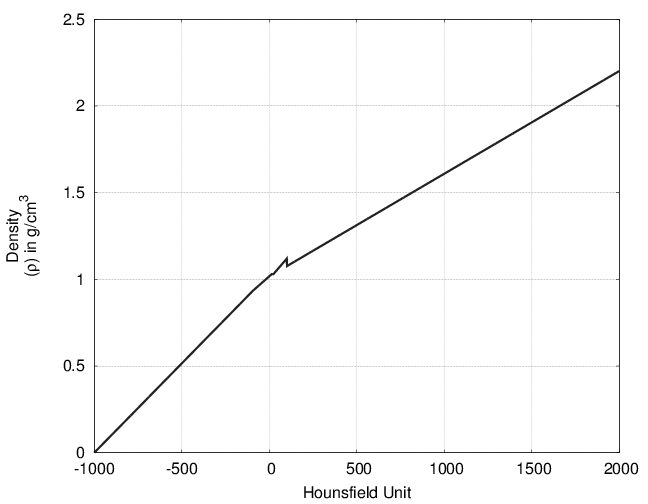

Fig. 1 shows the density values computed using the gVirtualXRay library.
The reference data can be found in Figure ??? of:
Wilfried Schneider, Thomas Bortfeld and Wolfgang Schlegel: “Correlation between CT numbers and tissue parameters needed for Monte Carlo simulations of clinical dose distributions”, Physics in Medicine and Biology. 2000 Feb; 45(2):459-78.
DOI: 10.1088/0031-9155/45/2/314

Fig 1. -- Density (ρ value) for a range of Hounsfield values.